Dự án: Xây dựng ứng dụng GenAI hỗ trợ lập kế hoạch du lịch tích hợp Multi-Agent
Tổng quan dự án
Hệ thống là 1 ứng dụng website dùng để quản lý hồ sơ kế hoạch du lịch của người dùng có tích hợp AI Travel Chatbot là một trợ lý du lịch tự động, được thiết kế để biến những yêu cầu thô của người dùng thành một lịch trình chi tiết, logic và tối ưu thời gian di chuyển.
Hệ thống cung cấp giao diện để người dùng thống kê về số lượng kế hoạch du lịch, trạng thái kế hoạch và danh sách các kế hoạch gần đây, giúp người dùng dễ dàng theo dõi và quản lý lịch trình của mình.

Hệ thống còn có giao diện thêm mới kế hoạch du lịch thủ công cho phép người dùng tạo kế hoạch mới bằng cách nhập các thông tin cơ bản như tên kế hoạch, mô tả, thời gian, trạng thái và địa điểm.


Hệ thống cũng xây dựng giao diện Trợ lý AI cho phép người dùng tương tác với hệ thống bằng ngôn ngữ tự nhiên để xây dựng lịch trình du lịch. Người dùng có thể nhập yêu cầu về địa điểm, thời gian, số lượng người hoặc lựa chọn các gợi ý nhanh để hệ thống tự động đề xuất lịch trình phù hợp.
1. Kiến Trúc Hệ Thống Đa Tác Tử — LLM & RAG
Hệ thống vận hành bởi 3 tác tử chuyên biệt, kết nối qua Gemini và RAG:
- Core: Gemini 1.5 Flash + Prompt Engineering có cấu trúc, dẫn dắt hội thoại thu thập thông tin từng bước.
- Reasoning: SAW tính điểm khách quan (thời tiết, rating, độ phổ biến) → RAG + Cosine Similarity cá nhân hoá danh sách gợi ý.
- Memory: Lưu trạng thái hội thoại và hồ sơ chuyến đi dạng JSON qua API.
- Environment: Django BE, React FE, pgvecto.rs.
- Core: Gemini 1.5 Flash + Prompt Engineering có cấu trúc, phân cụm địa điểm và làm giàu dữ liệu (giờ mở cửa, thời gian tham quan).
- Reasoning: Phân cụm → xây ma trận thời gian → VRPTW + OR-Tools (Path Cheapest Arc + Guided Local Search) → lên lịch chi tiết.
- Memory: Lưu trạng thái hội thoại và hồ sơ chuyến đi dạng JSON qua API.
- Environment: Django BE, React FE, OR-Tools, Distance Matrix API.
- Core: Gemini 1.5 Flash + Prompt Engineering, ước lượng chi phí ăn uống và sinh lời khuyên hành động.
- Reasoning: Truy vấn DB lấy vé & khách sạn → tính cước Grab Car thực tế → LLM ước lượng ăn uống theo bối cảnh → sinh lời khuyên.
- Memory: Lưu trạng thái hội thoại và hồ sơ chuyến đi dạng JSON qua API.
- Environment: Django BE, React FE, Internal DB.
2. Luồng Đóng Gói Dữ Liệu Trả Về Frontend

Backend (Django): Đóng vai trò trạm kiểm soát, tổng hợp dữ liệu từ 3 tác tử (nhu cầu, tọa độ lộ trình, dự toán chi phí) và đóng gói thành một JSON payload thống nhất.
Frontend: Tiếp nhận JSON để bóc tách và render tức thời lên giao diện: bản đồ lộ trình polyline, timeline từng ngày và bảng chi phí minh bạch. Thiết kế tách bạch giúp hệ thống phản hồi siêu tốc.
Những Thách Thức Trong Triển Khai
▸ GIẢI PHÁP: Áp dụng Few-shot + Chain-of-Thought, phân định ranh giới nhiệm vụ khắt khe cho từng agent. Xây dựng Python Validation Layer tự động kiểm tra output; nếu sai định dạng hoặc logic → bắt lỗi và kích hoạt sinh lại kết quả.